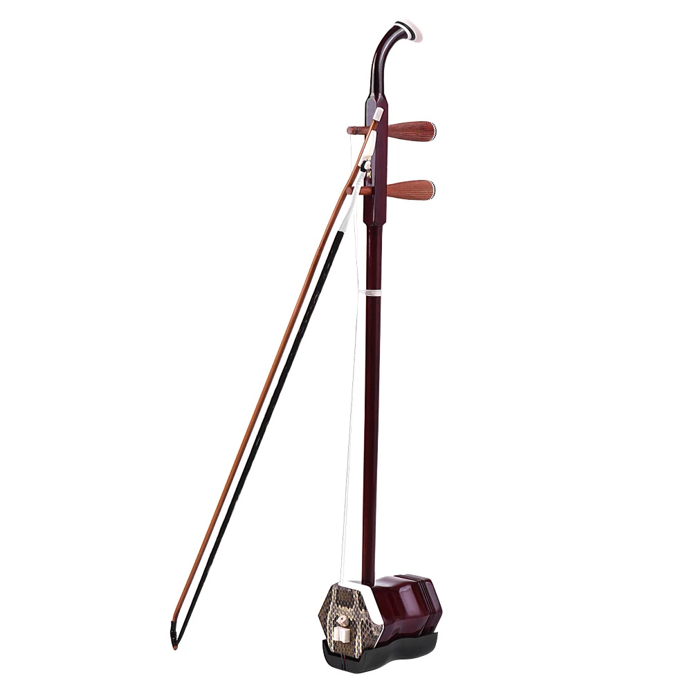
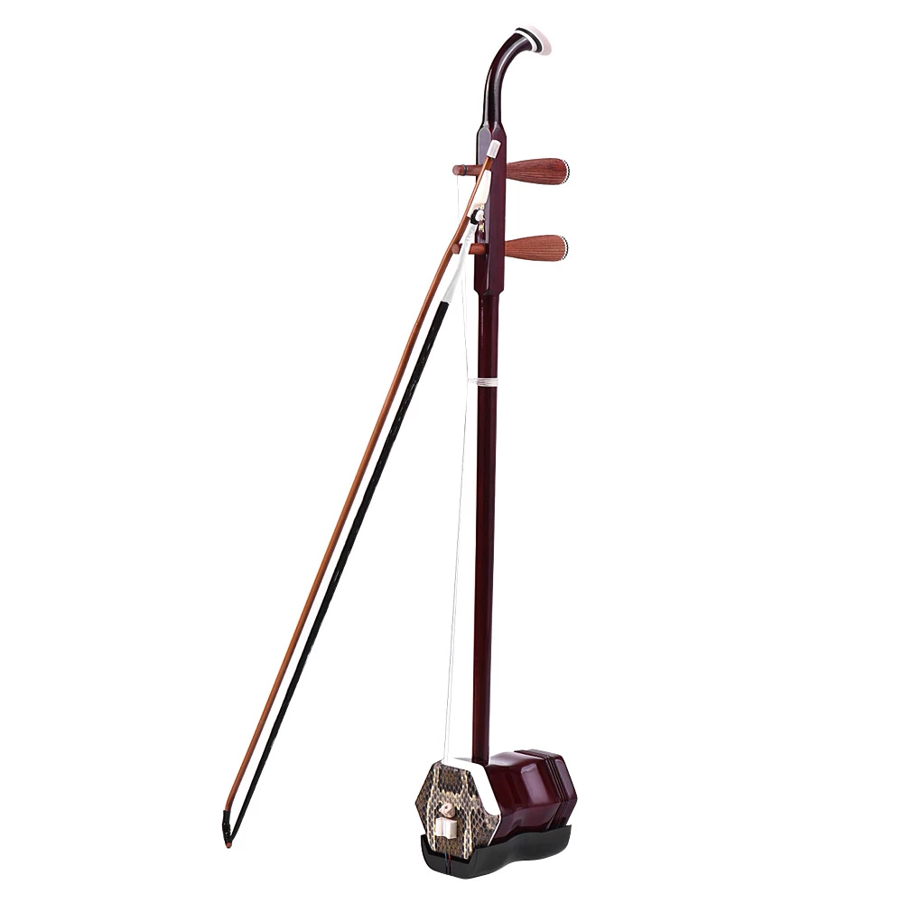
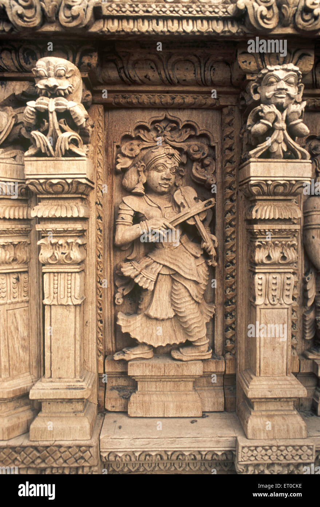
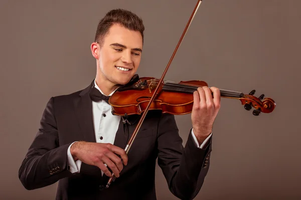
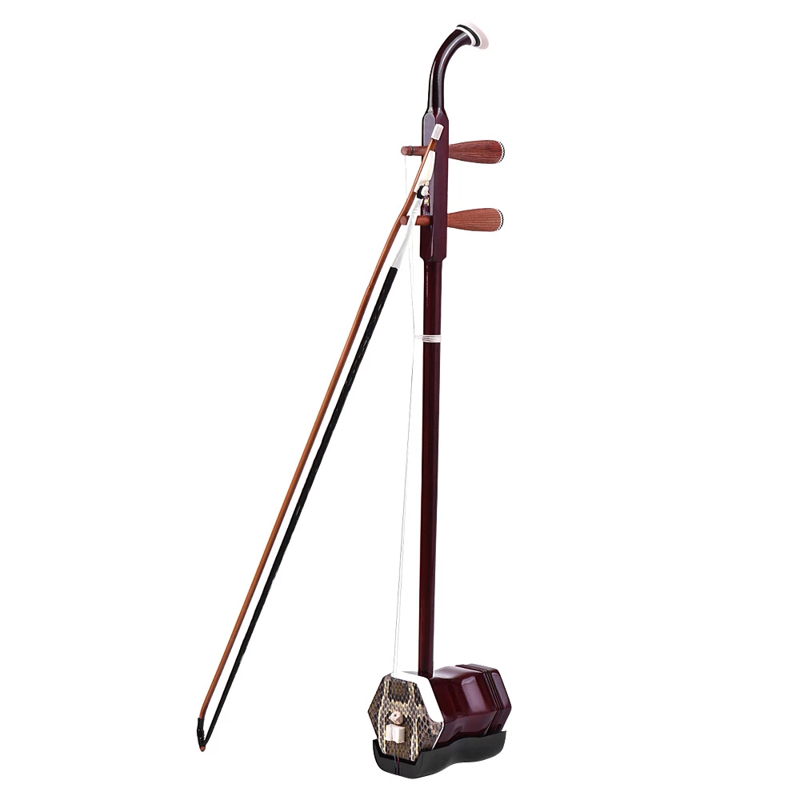
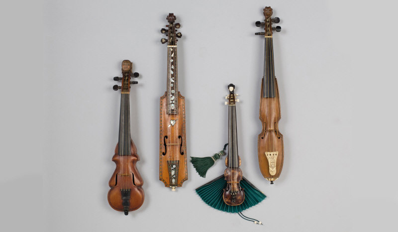
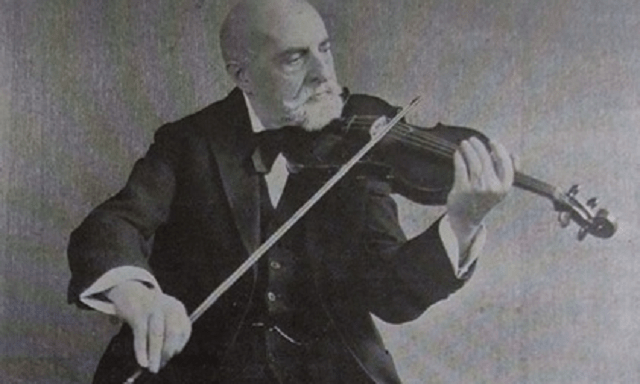

Este instrumento se convirtió en el principal integrante de las obras instrumentales: el concierto a solo, el concierto grosso, la sonata, la trío-sonata, la suite y la ópera. A mediados del siglo XVIII era uno de los instrumentos solistas más populares de la música europea. También formaban la sección más importante de la orquesta, con más de la mitad de sus integrantes. La agrupación instrumental de cámara más desarrollada de este periodo, el cuarteto de cuerdas, está formada por dos violines, viola y violonchelo.
En el siglo XX el violín alcanzó nuevos logros artísticos y técnicos con maestros como Isaac Stern, Yehudi Menuhin, Fritz Kreisler, Jascha Heifetz, Mischa Elman, Nathan Milstein, Joseph Szigeti y David Oistrakh. Desde el barroco hasta la actualidad, casi todos los compositores han escrito música para violín. Entre los conciertos más conocidos están los de Ludwig van Beethoven, Johannes Brahms, Felix Mendelssohn, Piotr Ilich Chaikovski, Jan Julius Sibelius, Béla Bartók, Ígor Stravinski, Serguéi Prokófiev, Alban Berg y Arnold Schönberg. haje.jpg1.-El violín es uno de los instrumentos más difíciles. Mucha gente se rinde porque desafina demasiado o porque le suenan muy mal las melodías pero, hay que ser constante, practicar y practicar. La técnica se obtiene practicando no de la nada. NO TE RINDAS.
2.-Haz escalas aunque te den pereza, mejoras mucho la afinación.
Imagina que estás en un escenario para practicar tu sonoridad.
4.-Por si no quedó claro, ¡PRACTICA!
Violín común: Violín chino:


Para más información visita la siguiente página.El violinista Leopold Auer (1845-1930) fue un violinista húngaro, profesor, director y compositor. Auer compuso unas pocas obras para su instrumento, como la Rhapsodie hongroise para violín y piano.

La vida de Vanessa-Mae se inicia en Singapur el 27 de octubre de 1978, violinista de formación clásica pero que se ha hecho famosa por sus grabaciones en las que mezcla piezas clásicas con pop, jazz, techno y otros ritmos modernos.
Si eres de Oviedo puedes ir al Conservatorio a aprender:
" frameborder="0">